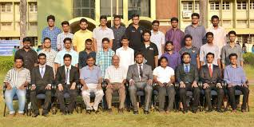

Title

The main objective of TaskForce NITK is to make the life of students at NITK
easier and provide special opportunities for the students to take part in
administrative activities.
It is a student initiative with the aim to aid and support the NITK Students’
Council in solving student issues. It is not an alternate body to the Students’
Council, but rather a supporting body which aims to bridge the gap between the
administration and the students. It is an Autonomous student body, directly
under the Director of the Institute.
TaskForce NITK will comprise of eight modules, which will seek to address the
various issues faced by students at college and also help them stay well-
informed regarding the happenings on campus.